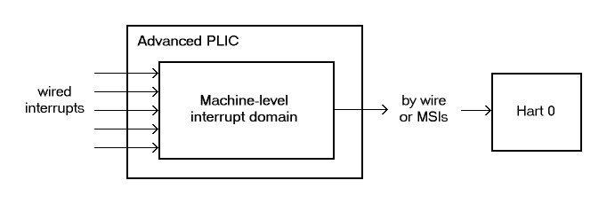
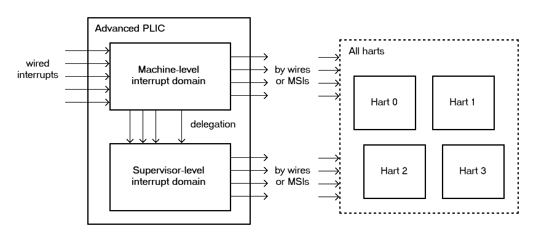
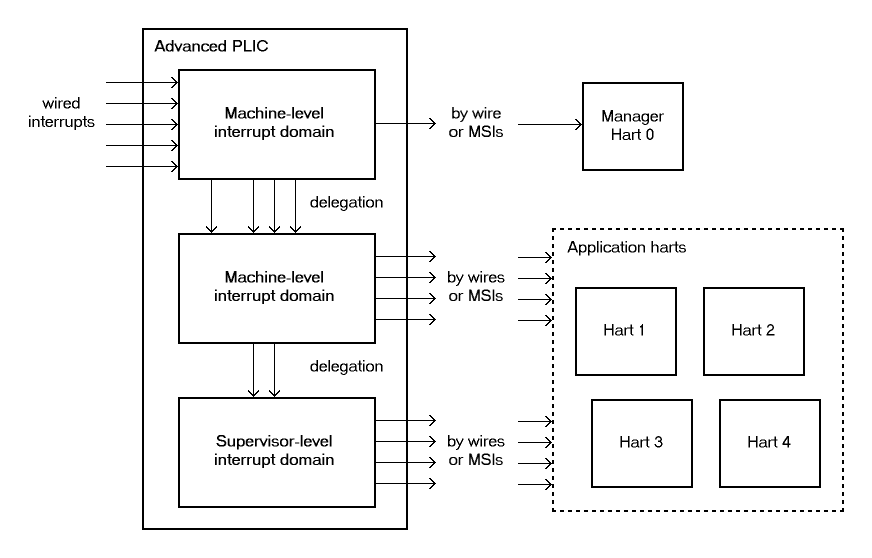

4.1. Advanced Platform-Level Interrupt Controller (APLIC)
In a RISC-V system, a Platform-Level Interrupt Controller (PLIC) handles external interrupts that are signaled through wires rather than by MSIs. When the RISC-V harts in a system do not have IMSICs, the harts themselves do not support MSIs, and all external interrupts to such harts must pass through a PLIC. But even in machines where harts have IMSICs and most interrupts are communicated via MSIs, it is not unusual for some device interrupts still to be signaled by dedicated wires. In particular, for devices (or device controllers) that do not otherwise need to initiate bus transactions in the system, the cost of supporting MSIs is especially high, so wired interrupts are a frugal alternative. Wired interrupts also continue to be universally supported by all current computer platforms, unlike MSIs, making another reason for many commodity devices or controllers to choose wired interrupts over MSIs, unless conforming to a standard like PCI Express that dictates MSIs.
This chapter specifies an Advanced PLIC (APLIC) that is not backward compatible with the earlier RISC-V PLIC. Full conformance to the Advanced Interrupt Architecture requires the APLIC. However, a workable system can be built substituting the older PLIC instead, assuming only wired interrupts to harts, not MSIs.
|
We intend eventually to provide a free example parameterized implementation of an APLIC, written in portable SystemVerilog, that we expect will be suitable for many RISC-V systems without modification. |
|
A draft specification exists for a Duo-PLIC that is software-configurable to act as either an original RISC-V PLIC or an APLIC. However, at this time, it appears unlikely that RISC-V International will ever ratify the Duo-PLIC specification as a standard. |
In a machine without IMSICs, every RISC-V hart accepts interrupts from exactly one PLIC or APLIC that is the external interrupt controller for that hart. A hart’s external interrupt controller (the PLIC or APLIC) signals interrupts to the hart through a dedicated connection, usually a wire, for each privilege level that the hart may receive interrupts. (Recall Figure 1. Traditional delivery of wired interrupts to harts without support for MSIs.). A system without IMSICs will typically have only one PLIC or APLIC, serving as the external interrupt controller for all RISC-V harts.
|
Because every RISC-V hart without an IMSIC has exactly one PLIC or APLIC as its external interrupt controller, a system with multiple APLICs must partition the harts into disjoint subsets, making each APLIC the external interrupt controller for a separate subset of the harts. While not prohibited, this arrangement is likely to be less efficient than having all harts share a single APLIC. |
RISC-V harts that employ IMSICs as their external interrupt controllers can receive external interrupts only in the form of MSIs. In that case, the role of an APLIC is to convert wired interrupts into MSIs for harts. (Recall Figure 2. Interrupt delivery by MSIs when harts have IMSICs for receiving them.) The APLIC is said to forward incoming wire-signaled interrupts to harts by sending MSIs to the harts.
When harts have IMSICs to support MSIs, a system may easily contain multiple APLICs for converting wired interrupts into MSIs, with each APLIC forwarding interrupts from a different subset of devices. Multiple APLICs are presumably more likely to arise when groups of devices are physically distant from one another, perhaps even on separate chips (including chiplets in a multi-chip module).
4.1.1. Interrupt sources and identities
An individual APLIC supports a fixed number of interrupt sources,
corresponding exactly with the set of physical incoming interrupt wires
at the APLIC. Most often, each source’s incoming wire is connected to
the output interrupt wire from a single device or device controller.
(For level-sensitive interrupts, the interrupt outputs of multiple
devices or controllers may be combined to drive the incoming wire of a
single interrupt source at an APLIC. An interrupt source’s incoming wire
might also be simply tied high or low, if, for example, the source will
always be configured as Detached. See
4.1.5.2. Source configurations (sourcecfg[1]–sourcecfg[1023]) for a description of source
modes.)
Each of an APLIC’s interrupt sources has a fixed unique identity number in the range 1 to , where is the total number of sources at the APLIC. The number zero is not a valid interrupt identity number at an APLIC. The maximum number of interrupt sources an APLIC may support is 1023.
When an APLIC delivers interrupts directly to harts at a given privilege level (rather than forwarding interrupts as MSIs), the APLIC is the external interrupt controller for the harts at that privilege level, and the interrupt identities at the APLIC become directly the minor identities for external interrupts at the harts.
On the other hand, when an APLIC forwards interrupts by MSIs, software configures a new interrupt identity number for the outgoing MSIs of each source. Consequently, in this case, the source identity numbers at a given APLIC only distinguish the incoming interrupts at the APLIC and have no relevance outside the APLIC.
4.1.2. Interrupt domains
An APLIC supports one or more interrupt domains, each associated with a subset of RISC-V harts at one privilege level (machine or supervisor level). The harts within an interrupt domain are those that the domain can interrupt at the corresponding privilege level. Each domain has its own memory-mapped control region in the machine’s address space that appears to control a complete, separate APLIC, though in fact all domain interfaces together access a single combined interrupt controller.
Figure 3 through Figure 5 depict some possible hierarchies of interrupt domains implemented by an APLIC in a RISC-V system.
The first figure represents a minimal system that has a single hart not supporting supervisor mode, with a single interrupt domain for machine level on that hart. The next figure, Figure 4, shows a basic arrangement for a larger system designed for symmetric multiprocessing (SMP), with multiple harts that all implement supervisor mode. In such cases, the APLIC will usually provide a separate interrupt domain for supervisor level, as the figure portrays. This supervisor-level interrupt domain allows an operating system, running in S-mode on the multiple harts, to have direct control over the interrupts it receives, avoiding the need to call upon M-mode to exercise that control.

An APLIC’s interrupt domains are arranged in a tree hierarchy, with the root domain always being at machine level. Incoming interrupt wires arrive first at the root domain. Each domain may then selectively delegate all or a subset of interrupt sources to its child domains in the hierarchy. Within a given APLIC, interrupt source numbers are invariant across all domains, so source identity number always refers to the same source in every domain, corresponding to incoming wire number . For an interrupt domain below the root, interrupt sources not delegated down to that domain appear to the domain as being not implemented.
Figure 5 shows a hierarchy of three interrupt domains, two at machine level and one at supervisor level. The arrangement in the figure, when combined with PMP (physical memory protection), allows machine-level software to isolate a selection of interrupts exclusively for hart 0, beyond the reach of the four application harts, even at machine level.


|
In order for the harts within an interrupt domain to have direct control over the interrupts from the domain, the harts must be cooperatively controlled by software at the same privilege level. In particular, a single operating system should control all of the harts associated with a supervisor-level interrupt domain. In the examples of Figure 4 and Figure 5, control of the APLIC’s supervisor-level interrupt domain could not be safely split among multiple independent OSes. Given the domain hierarchies depicted in the figures, if it were necessary to partition the application harts for multiple OSes, machine-level software would need to prevent direct OS access to the supervisor-level interrupt domain and instead provide SBI services for controlling APLIC interrupts or, alternatively, emulate the control interfaces of separate supervisor-level interrupt domains, one for each OS. Note that such emulation might still make use of the APLIC’s physical supervisor-level interrupt domain, but under the control of machine-level software. |
An APLIC’s interrupt domain hierarchy satisfies these rules:
-
The root domain is at machine level.
-
The parent of any supervisor-level interrupt domain is a machine-level domain that includes at least the same harts (but at machine level, obviously). The parent domain may have a larger set of harts at machine level.
-
For each interrupt domain, interrupts from the domain are signaled to harts all by the same method, either by wire or by MSIs, not by a mixture of methods among the harts.
When a RISC-V hart’s external interrupt controller is an APLIC, not an IMSIC, the hart can be within only one interrupt domain of this APLIC at each privilege level.
On the other hand, a hart that has an IMSIC for its external interrupt controller may, at each privilege level, be in multiple APLIC interrupt domains, even those of the same APLIC, and may potentially receive MSIs from multiple different APLICs in the machine.
A platform might give software a way to choose between multiple interrupt domain hierarchies for any given APLIC. Any such configurability is outside the scope of this specification, but should be available to machine level only.
4.1.3. Hart index numbers
Within a given interrupt domain, each of the domain’s harts has a unique index number in the range 0 to (= 16,383). The index number a domain associates with a hart may or may not have any relationship to the unique hart identifier ("hart ID") that the Privileged Architecture assigns to the hart. Two different interrupt domains may employ a different mapping of index numbers to the same set of harts. However, if any of an APLIC’s interrupt domains can forward interrupts by MSI, then all machine-level domains of the APLIC share a common mapping of index numbers to harts.
|
For efficiency, implementations should prefer small integers for hart index numbers. |
4.1.4. Overview of interrupt control for a single domain
Each interrupt domain implemented by an APLIC has its own separate physical control interface that is memory-mapped in the machine’s address space, allowing access to each domain to be easily regulated by both PMP (physical memory protection) and page-based address translation. The control interfaces of all interrupt domains have a common structure. In most respects, every domain appears to software as though it were a root domain, without visibility of the domains above it in the hierarchy.
An individual interrupt domain has the following components for each interrupt source at the APLIC:
-
Source configuration. This determines whether the specific source is active in the domain and, if so, how the incoming wire is to be interpreted, such as level-sensitive or edge-sensitive. For a source that is inactive in the domain, source configuration controls any delegation to a child domain.
-
Interrupt-pending and interrupt-enable bits. For an inactive source, these two bits are read-only zeros. Otherwise, the pending bit records an interrupt that arrived and has not yet been signaled or forwarded, while the enable bit determines whether interrupts from this source should currently be delivered, or should remain pending.
-
Target selection. For an active source, target selection determines the hart to receive the interrupt and either the interrupt’s priority or the new interrupt identity when forwarding as an MSI.
For interrupt domains that deliver interrupts directly to harts rather than forwarding by MSIs, the domain has a final set of components for controlling interrupt delivery to harts, one instance per hart in the domain.
|
Although an APLIC with multiple interrupt domains may appear to duplicate the per-source state listed above (source configuration, etc.) by a factor equal to the number of domains, in fact, APLIC implementations can exploit the fact that each source is ultimately active in only one domain. In all domains to which a specific interrupt source has not been delegated, the state associated with the source appears as read-only zeros, requiring no physical register bits. |
4.1.5. Memory-mapped control region for an interrupt domain
For each interrupt domain that an APLIC supports, there is a dedicated memory-mapped control region for managing interrupts in that domain. This control region is a multiple of 4 KiB in size and aligned to a 4-KiB address boundary. The smallest valid control region is 16 KiB. An interrupt domain’s control region is populated by a set of 32-bit registers. The first 16 KiB contains the registers listed in Table 1.
offset |
size |
register name |
|
|
4 bytes |
|
|
|
4 bytes |
|
|
|
4 bytes |
|
|
… |
… |
||
|
4 bytes |
|
|
|
4 bytes |
|
(machine-level interrupt domains only) |
|
4 bytes |
|
” |
|
4 bytes |
|
” |
|
4 bytes |
|
” |
|
4 bytes |
|
|
|
4 bytes |
|
|
… |
… |
||
|
4 bytes |
|
|
|
4 bytes |
|
|
|
4 bytes |
|
|
|
4 bytes |
|
|
… |
… |
||
|
4 bytes |
|
|
|
4 bytes |
|
|
|
4 bytes |
|
|
|
4 bytes |
|
|
… |
… |
||
|
4 bytes |
|
|
|
4 bytes |
|
|
|
4 bytes |
|
|
|
4 bytes |
|
|
… |
… |
||
|
4 bytes |
|
|
|
4 bytes |
|
|
|
4 bytes |
|
|
|
4 bytes |
|
|
|
4 bytes |
|
|
|
4 bytes |
|
|
|
4 bytes |
|
|
… |
… |
||
|
4 bytes |
|
Starting at offset 0x4000, an interrupt domain’s control region may optionally
have an array of interrupt delivery control (IDC) structures, one for
each potential hart index number in the range 0 to some maximum that is
at least as large as the maximum hart index number for the interrupt
domain. IDC structures are used only when the domain is configured to
deliver interrupts directly to harts instead of being forwarded by MSIs.
An interrupt domain that supports only interrupt forwarding by MSIs and
not the direct delivery of interrupts by the APLIC does not need IDC
structures in its control region.
The first IDC structure, if any, is for the hart with index number 0; the second is for the hart with index number 1; and so forth. Each IDC structure is 32 bytes and has these defined registers:
offset |
size |
register name |
|
4 bytes |
|
|
4 bytes |
|
|
4 bytes |
|
|
4 bytes |
|
|
4 bytes |
|
IDC structures are packed contiguously, 32 bytes per structure, so the
offset from the beginning of an interrupt domain’s control region to its
second IDC structure (hart index 1), if it exists, is 0x4020; the offset to
the third IDC structure (hart index 2), if it exists, is 0x4040; etc.
The array of IDC structures may include some for potential hart index numbers that are not actual hart index numbers in the domain. For example, the first IDC structure is always for hart index 0, but 0 is not necessarily a valid index number for any hart in the domain. For each IDC structure in the array that does not correspond to a valid hart index number in the domain, the IDC structure’s registers may (or may not) be all read-only zeros.
Aside from the registers in Table 1 and those listed above for IDC structures, all other bytes in an interrupt domain’s control region are reserved and are implemented as read-only zeros.
Only naturally aligned 32-bit simple reads and writes are supported within an interrupt domain’s control region. Writes to read-only bytes are ignored. For other forms of accesses (other sizes, misaligned accesses, or AMOs), implementations should preferably report an access fault or bus error but must otherwise ignore the access.
The registers of the first 16 KiB of an interrupt domain’s control region (all but the IDC structures) are documented individually below. IDC structures are documented later, in 4.1.8. Interrupt delivery directly by the APLIC, "Interrupt delivery directly by the APLIC."
4.1.5.1. Domain configuration (domaincfg)
The domaincfg register has this format:
bits 31:24 |
read-only 0x80 |
bit 8 |
IE |
bit 7 |
read-only 0 |
bit 2 |
DM (WARL) |
bit 0 |
BE (WARL) |
All other register bits are reserved and read as zeros.
Bit IE (Interrupt Enable) is a global enable for all active interrupt sources at this interrupt domain. Only when IE = 1 are pending-and-enabled interrupts actually signaled or forwarded to harts.
The value of bit IE affects only whether interrupts are delivered to harts.
It has no effect on any other APLIC state, including
the interrupt-enable and interrupt-pending bits of interrupt sources
and IDC registers idelivery, topi, and claimi.
Field DM (Delivery Mode) is WARL and determines how this interrupt domain delivers interrupts to harts. The two possible values for DM are:
0 = |
direct delivery mode |
1 = |
MSI delivery mode |
In direct delivery mode, interrupts are prioritized and signaled directly to harts by the APLIC itself. In MSI delivery mode, interrupts are forwarded by the APLIC as MSIs to harts, presumably for further handling by IMSICs at those harts. A given APLIC implementation may support either or both of these delivery modes for each interrupt domain.
If the interrupt domain’s harts have IMSICs, then unless the relevant
interrupt files of those IMSICs support value 0x40000000 for register eidelivery, setting DM
to zero (direct delivery mode) will have the same effect as setting IE
to zero. See External interrupt delivery enable register (eidelivery)
and 4.1.8.2. Interrupt delivery and handling.
BE (Big-Endian) is a WARL field that determines the byte order for most registers in the interrupt domain’s memory-mapped control region. If BE = 0, byte order is little-endian, and if BE = 1, it is big-endian. For RISC-V systems that support only little-endian, BE may be read-only zero, and for those that support only big-endian, BE may be read-only one. For bi-endian systems, BE is writable.
Field BE affects the byte order of accesses to the domaincfg register itself, just
as for other registers in the interrupt domain’s control region. To deal
with this fact, the read-only value in domaincfg’s most-significant byte, bits
31:24, serves two purposes. First, for any read of domaincfg, the register’s correct byte order is easily determined from the four-byte value
obtained: When interpreted in the correct byte order, bit 31 is one, and
in the wrong order, bit 31 is zero. Second, if the value of BE is
uncertain (prior to software initializing the interrupt domain,
presumably), an 8-bit value can be safely written to domaincfg by writing ( <<24)| , where <<24 represents
shifting left by 24 bits, and the vertical bar (|) represents bitwise
logical OR. After domaincfg is written once, the value of BE should then be known,
so subsequent writes should not need to repeat the same trick.
At system reset, all writable bits in domaincfg are initialized to zero,
including IE. If an implementation supports additional forms of reset
for the APLIC, it is implementation-defined (or possibly
platform-defined) how these other resets may affect domaincfg.
4.1.5.2. Source configurations (sourcecfg[1]–sourcecfg[1023])
For each possible interrupt source , register sourcecfg[ ] controls
the source mode for source in this interrupt domain as
well as any delegation of the source to a child domain. When
source is not implemented, or appears in this domain not
to be implemented, sourcecfg[ ] is read-only zero. If source was not
delegated to this domain and is then changed (at the parent domain) to
become delegated to this domain, sourcecfg[ ] remains zero until successfully written with a nonzero value.
Bit 10 of sourcecfg[ ] is a 1-bit field called D (Delegate). If D = 1,
source is delegated to a child domain, and if D = 0, it
is not delegated to a child domain. Interpretation of the rest of sourcecfg[ ] depends on field D.
When interrupt source is delegated to a child domain, sourcecfg[ ] has this format:
bit 10 |
D, =1 |
bits 9:0 |
Child Index (WLRL) |
All other register bits are reserved and read as zeros.
Child Index is a WLRL field that specifies the interrupt domain to which this source is delegated. For an interrupt domain with child domains, this field must be able to hold integer values in the range 0 to . Each interrupt domain has a fixed mapping from these index numbers to child domains.
If an interrupt domain has no children in the domain hierarchy, bit D
cannot be set to one in any sourcecfg register for that domain. For such a leaf
domain, attempting to write a sourcecfg register with a value that has bit 10 = 1 causes the entire register to be set to zero instead.
When interrupt source is not delegated to a child
domain, sourcecfg[ ] has this format:
bit 10 |
D, =0 |
bits 2:0 |
SM (WARL) |
All other register bits are reserved and read as zeros.
The SM (Source Mode) field is WARL and controls whether the interrupt source is active in this domain, and if so, what values or transitions on the incoming wire are interpreted as interrupts. The values allowed for SM and their meanings are listed in Table 2. Inactive (zero) is always supported for field SM. Implementations are free to choose, independently for each interrupt source, what other values are supported for SM.
| Value | Name | Description |
|---|---|---|
0 |
Inactive |
Inactive in this domain (and not delegated) |
1 |
Detached |
Active, detached from the source wire |
2–3 |
— |
Reserved |
4 |
Edge1 |
Active, edge-sensitive; interrupt asserted on rising edge |
5 |
Edge0 |
Active, edge-sensitive; interrupt asserted on falling edge |
6 |
Level1 |
Active, level-sensitive; interrupt asserted when high |
7 |
Level0 |
Active, level-sensitive; interrupt asserted when low |
An interrupt source is inactive in the interrupt domain if either the
source is delegated to a child domain (D = 1) or it is not delegated
(D = 0) and SM is Inactive. Whenever interrupt source is
inactive in an interrupt domain, the corresponding interrupt-pending and
interrupt-enable bits within the domain are read-only zeros, and
register target[ ] is also read-only zero. If source is changed
from inactive to an active mode, the interrupt source’s pending and
enable bits remain zeros, unless set automatically for a reason
specified later in this section or in
4.1.7. Precise effects on interrupt-pending bits, and the defined subfields of target[ ] obtain UNSPECIFIED values.
When a source is configured as Detached, its wire input is ignored;
however, the interrupt-pending bit may still be set by a write to a setip or setipnum register. (This mode can be useful for receiving MSIs, for example.)
An edge-sensitive source can be configured to recognize an incoming interrupt on either a rising edge (low-to-high transition) or a falling edge (high-to-low transition). When configured for a falling edge (mode Edge0), the source is said to be inverted.
A level-sensitive source can be configured to interpret either a high level (1) or a low level (0) on the wire as the assertion of an interrupt. When configured for a low level (mode Level0), the source is said to be inverted.
For an interrupt source that is configured as edge-sensitive or level-sensitive, define
rectified input value = (incoming wire value) XOR (source is inverted). |
For a source that is inactive or Detached, the rectified input value is zero.
Any write to a sourcecfg register might (or might not) cause the corresponding interrupt-pending bit to be set to one if the rectified input value is high (= 1) under the new source mode. A write to a sourcecfg register will not by itself cause a pending bit to be cleared except when the source is made inactive. (But see 4.1.7. Precise effects on interrupt-pending bits.)
4.1.5.3. Machine MSI address configuration (mmsiaddrcfg and mmsiaddrcfgh)
For machine-level interrupt domains, registers mmsiaddrcfg and mmsiaddrcfgh may optionally provide parameters used to determine the addresses to write outgoing MSIs.
If no interrupt domain of the APLIC supports MSI delivery mode (domaincfg.DM is read-only zero for all domains), these two registers are not implemented for any domain. Otherwise, they are implemented for the root domain, and
may or may not be implemented for other machine-level domains. For
domains not at machine level, they are never implemented. When a domain
does not implement mmsiaddrcfg and mmsiaddrcfgh, the eight bytes at their locations are simply read-only zeros like other reserved bytes.
Registers mmsiaddrcfg and mmsiaddrcfgh are potentially writable only for the root domain. For all
other machine-level domains that implement them, they are read-only.
When implemented, mmsiaddrcfg has this format:
bits 31:0 |
Low Base PPN (WARL) |
and mmsiaddrcfgh has this format:
bit 31 |
L |
bits 28:24 |
HHXS (WARL) |
bits 22:20 |
LHXS (WARL) |
bits 18:16 |
HHXW (WARL) |
bits 15:12 |
LHXW (WARL) |
bits 11:0 |
High Base PPN (WARL) |
All other bits of mmsiaddrcfgh are reserved and read as zeros.
Fields High Base PPN from mmsiaddrcfgh and Low Base PPN from mmsiaddrcfg concatenate to form a
44-bit Base PPN (Physical Page Number). The use of this value and fields
HHXS (High Hart Index Shift), LHXS (Low Hart Index Shift), HHXW (High
Hart Index Width), and LHXW (Low Hart Index Width) for determining
target addresses for MSIs is described later, in
4.1.9.1. Addresses and data for outgoing MSIs.
When mmsiaddrcfg and mmsiaddrcfgh are writable (root domain only), all fields other than L are WARL.
An implementation is free to choose what values are supported.
Typically, some bits are writable while others are read-only constants.
In the extreme, the values of all fields may be entirely constant, fixed
by the implementation.
If bit L in mmsiaddrcfgh is set to one, mmsiaddrcfg and mmsiaddrcfgh are locked, and writes to the registers
are ignored, making the registers effectively read-only. When L = 1, the
other fields in mmsiaddrcfg and mmsiaddrcfgh may optionally all read as zeros. In that case, if
these other fields were given nonzero values when L was first set in the
root domain, their values are retained internally by the APLIC but
become no longer visible by reading mmsiaddrcfg and mmsiaddrcfgh.
Setting mmsiaddrcfgh.L to one also locks registers smsiaddrcfg and smsiaddrcfgh described in the next
subsection, if those registers are implemented as well.
For the root domain, L is initialized at system reset to either zero or
one, whichever is deemed appropriate for the specific APLIC
implementation. If reset initializes L to one, either the other fields
are hardwired by the APLIC to constants, or the APLIC has a different
means, outside of this standard, for determining the addresses of
outgoing MSI writes. In the latter case, the other fields in mmsiaddrcfg and mmsiaddrcfgh may all
read as zeros, so registers mmsiaddrcfg and mmsiaddrcfgh have only read-only values zero and 0x80000000
respectively. Any time mmsiaddrcfg or mmsiaddrcfgh has a different value (not zero or 0x80000000
respectively), the addresses for outgoing MSI writes directed to machine
level must be derivable from the visible values of these registers, as
specified in 4.1.9.1. Addresses and data for outgoing MSIs.
For machine-level domains that are not the root domain, if these
registers are implemented, bit L is always one, and the other fields
either are read-only copies of mmsiaddrcfg and mmsiaddrcfgh from the root domain, or are all zeros.
|
Giving software the ability to arbitrarily determine the addresses to which MSIs are sent, even if allowed only for machine level, permits bypassing physical memory protection (PMP). For APLICs that support MSI delivery mode, it is recommended, if feasible, that the APLIC internally hardwire the physical addresses for all target IMSICs, putting those addresses beyond the reach of software to change. However, not all APLIC implementations will be able to follow that recommendation. It is expected that most systems will arrange the physical addresses of
target IMSICs in a simple linear correspondence with hart index numbers.
(See Arrangement of the memory regions of multiple interrupt files.)
Registers APLICs that actually hardwire the IMSIC addresses internally can
implement these registers simply as read-only with values zero and |
If an APLIC supports additional forms of reset besides system reset, it
is implementation-defined (or possibly platform-defined) how these other
resets may affect mmsiaddrcfg and mmsiaddrcfgh (as well as smsiaddrcfg and smsiaddrcfgh) in the root domain. However, it
must not be possible for insufficiently privileged software to use a
localized reset to unlock these registers by changing bit L back to
zero. For this reason, it is likely that only a complete system reset
affects these registers, and any other resets do not.
4.1.5.4. Supervisor MSI address configuration (smsiaddrcfg and smsiaddrcfgh)
For machine-level interrupt domains, registers smsiaddrcfg and smsiaddrcfgh may optionally
provide parameters used by supervisor-level domains to determine the
addresses to write outgoing MSIs.
Registers smsiaddrcfg and smsiaddrcfgh are implemented by a domain if the domain implements mmsiaddrcfg and mmsiaddrcfgh
and the APLIC has at least one supervisor-level interrupt domain. If the
registers are not implemented, the eight bytes at their locations are
simply read-only zeros like other reserved bytes.
Like mmsiaddrcfg and mmsiaddrcfgh, registers smsiaddrcfg and smsiaddrcfgh are potentially writable only for the root
domain. For all other machine-level domains that implement them, they
are read-only.
When implemented, smsiaddrcfg has this format:
bits 31:0 |
Low Base PPN (WARL) |
and smsiaddrcfgh has this format:
bits 22:20 |
LHXS (WARL) |
bits 11:0 |
High Base PPN (WARL) |
All other bits of smsiaddrcfgh are reserved and read as zeros.
Fields High Base PPN from smsiaddrcfgh and Low Base PPN from smsiaddrcfg concatenate to form a
44-bit Base PPN (Physical Page Number). The use of this value and field
LHXS (Low Hart Index Shift) for determining target addresses for MSIs is
described later, in 4.1.9.1. Addresses and data for outgoing MSIs.
When smsiaddrcfg and smsiaddrcfgh are writable (root domain only), all fields are WARL. An
implementation is free to choose what values are supported, just as for mmsiaddrcfg and mmsiaddrcfgh.
If register mmsiaddrcfgh of the domain has bit L set to one, then smsiaddrcfg and smsiaddrcfgh are locked as
read-only alongside mmsiaddrcfg and mmsiaddrcfgh. When mmsiaddrcfgh.L = 1, if the readable values of mmsiaddrcfg and mmsiaddrcfgh are
zero and 0x80000000 respectively—because their other fields are hidden—then smsiaddrcfg and smsiaddrcfgh are hidden also and read as zeros.
For the root domain only, if mmsiaddrcfgh.L = 1 and the MSI-address-configuration
fields are hidden (so mmsiaddrcfgh reads as 0x80000000 and registers mmsiaddrcfg, smsiaddrcfg, and smsiaddrcfgh all read as zeros),
then whatever values smsiaddrcfg and smsiaddrcfgh had when mmsiaddrcfgh.L was first set are retained
internally by the APLIC, though those values are no longer visible by
reading the registers. Alternatively, if system reset initializes mmsiaddrcfgh.L = 1
in the root domain, and if all MSI-address-configuration fields never
appear as anything other than zeros, then the APLIC implementation has
some other, possibly nonstandard, means for determining the addresses of
outgoing MSIs, as discussed in the previous subsection,
4.1.5.3. Machine MSI address configuration (mmsiaddrcfg and mmsiaddrcfgh).
Any time mmsiaddrcfg and mmsiaddrcfgh are not read-only zero and 0x80000000 respectively, the addresses for
outgoing MSI writes directed to supervisor level must be derivable from
the visible values of registers mmsiaddrcfgh, smsiaddrcfg, and smsiaddrcfgh, as specified in
4.1.9.1. Addresses and data for outgoing MSIs.
For machine-level domains that are not the root domain, if smsiaddrcfg and smsiaddrcfgh are
implemented and are not read-only zeros, then they are read-only copies
of the same registers from the root domain.
4.1.5.5. Set interrupt-pending bits (setip[0]-setip[31])
Reading or writing setip[ ] register reads or potentially modifies the pending
bits for interrupt sources through
. For an implemented interrupt
source within that range, the pending bit for
source corresponds with register bit
( ).
A read of a setip register returns the pending bits of the corresponding
interrupt sources. Bit positions in the result value that do not
correspond to an implemented interrupt source (such as bit 0 of setip[0]) are zeros.
On a write to a setip register, for each bit that is one in the 32-bit value
written, if that bit position corresponds to an active interrupt source,
the interrupt-pending bit for that source is set to one if possible. See
4.1.7. Precise effects on interrupt-pending bits for exactly when a pending bit may
be set by writing to a setip register.
4.1.5.6. Set interrupt-pending bit by number (setipnum)
If is an active interrupt source number in the domain,
writing 32-bit value to register setipnum causes the pending bit
for source to be set to one if possible. See
4.1.7. Precise effects on interrupt-pending bits for exactly when a pending bit may
be set by writing to setipnum.
A write to setipnum is ignored if the value written is not an active interrupt
source number in the domain. A read of setipnum always returns zero.
4.1.5.7. Rectified inputs, clear interrupt-pending bits (in_clrip[0]-in_clrip[31])
Reading register in_clrip[ ] returns the rectified input (4.1.5.2. Source configurations (sourcecfg[1]–sourcecfg[1023])) for interrupt sources
through
, while writing in_clrip[ ] potentially
modifies the pending bits for the same sources. For an implemented
interrupt source within the specified range,
source corresponds with register bit
( ).
A read of an in_clrip register returns the rectified input values of the
corresponding interrupt sources. Bit positions in the result value that
do not correspond to an implemented interrupt source (such as bit 0 of in_clrip[0]) are zeros.
On a write to an in_clrip register, for each bit that is one in the 32-bit value written, if that bit position corresponds to an active interrupt source, the interrupt-pending bit for that source is cleared if possible. See
4.1.7. Precise effects on interrupt-pending bits for exactly when a pending bit may
be cleared by writing to an in_clrip register.
4.1.5.8. Clear interrupt-pending bit by number (clripnum)
If is an active interrupt source number in the domain,
writing 32-bit value to register clripnum causes the pending bit
for source to be cleared if possible. See
4.1.7. Precise effects on interrupt-pending bits for exactly when a pending bit may
be cleared by writing to clripnum.
A write to clripnum is ignored if the value written is not an active interrupt
source number in the domain. A read of clripnum always returns zero.
4.1.5.9. Set interrupt-enable bits (setie[0]-setie[31])
Reading or writing register setie[ ] reads or potentially modifies the enable
bits for interrupt sources through
. For an implemented interrupt
source within that range, the enable bit for
source corresponds with register bit
.
A read of a setie register returns the enable bits of the corresponding
interrupt sources. Bit positions in the result value that do not
correspond to an implemented interrupt source (such as bit 0 of setie[0]) are zeros.
On a write to a setie register, for each bit that is one in the 32-bit value
written, if that bit position corresponds to an active interrupt source,
the interrupt-enable bit for that source is set to one.
4.1.5.10. Set interrupt-enable bit by number (setienum)
If is an active interrupt source number in the domain,
writing 32-bit value to register setienum causes the enable bit for source to be set to one.
A write to setienum is ignored if the value written is not an active interrupt source number in the domain. A read of setienum always returns zero.
4.1.5.11. Clear interrupt-enable bits (clrie[0]-clrie[31])
Writing register clrie[ ] potentially modifies the enable bits for interrupt sources through
. For an implemented interrupt
source within that range, the enable bit for
source corresponds with register bit
.
On a write to a clrie register, for each bit that is one in the 32-bit value written, the interrupt-enable bit for that source is cleared.
A read of a clrie register always returns zero.
4.1.5.12. Clear interrupt-enable bit by number (clrienum)
If is an active interrupt source number in the domain,
writing 32-bit value to register clrienum causes the enable bit for source to be cleared.
A write to clrienum is ignored if the value written is not an active interrupt source number in the domain. A read of clrienum always returns zero.
4.1.5.13. Set interrupt-pending bit by number, little-endian (setipnum_le)
Register setipnum_le acts identically to setipnum except that byte order is always little-endian, as though field BE (Big-Endian) of register domaincfg is zero.
For systems that are big-endian-only, with domaincfg.BE hardwired to one, setipnum_le need not be implemented, in which case the four bytes at this offset are simply read-only zeros like other reserved bytes.
setipnum_le may be used as a write port for MSIs.
4.1.5.14. Set interrupt-pending bit by number, big-endian (setipnum_be)
Register setipnum_be acts identically to setipnum except that byte order is always big-endian, as though field BE (Big-Endian) of register domaincfg is one.
For systems that are little-endian-only, with domaincfg.BE hardwired to zero, setipnum_be need not be implemented, in which case the four bytes at this offset are simply read-only zeros like other reserved bytes.
For systems built mainly for big-endian byte order, setipnum_be may be useful as a write port for MSIs from some devices.
4.1.5.15. Generate MSI (genmsi)
When the interrupt domain is configured in MSI delivery mode (domaincfg.DM = 1), register genmsi can be used to cause an extempore MSI to be sent from the
APLIC to a hart. The main purpose for this function is to assist in
establishing a temporary known ordering between a hart’s writes to the
APLIC’s registers and the transmission of MSIs from the APLIC to the
hart, as explained later in 4.1.9.3. Synchronizing interactions between a hart and the APLIC.
|
For other purposes, sending an MSI to a hart is usually better done by
writing directly to the hart’s IMSIC, rather than employing an APLIC as
an intermediary. Use of the |
Register genmsi has this format:
bits 31:18 |
Hart Index (WLRL) |
bits 12 |
Busy (read-only) |
bits 10:0 |
EIID (WARL) |
All other register bits are reserved and read as zeros.
The Busy bit is ordinarily zero (false), but a write to genmsi causes Busy to become one (true), indicating an extempore MSI is pending. The Hart
Index field specifies the destination hart, and EIID (External Interrupt
Identity) specifies the data value for the MSI. Fields Hart Index and
EIID have the same formats and behavior as in a target register, documented in the next subsection, 4.1.5.16. Interrupt targets (target[1]-target[1023]). For a
machine-level interrupt domain, an extempore MSI is sent to the
destination hart at machine level, and for a supervisor-level interrupt
domain, an extempore MSI is sent to the destination hart at supervisor
level.
A pending extempore MSI should be sent by the APLIC with minimal delay.
Once it has left the APLIC and the APLIC is able to accept a new write
to genmsi for another extempore MSI, Busy reverts to false. All MSIs previously sent from this APLIC to the same hart must be visible at the hart’s IMSIC before the extempore MSI becomes visible at the hart’s IMSIC.
While Busy is true, writes to genmsi are ignored.
Extempore MSIs are not affected by the IE bit of the domain’s domaincfg register. An extempore MSI is sent even if domaincfg.IE = 0.
When the interrupt domain is configured in direct delivery mode (domaincfg.DM = 0), register genmsi is read-only zero.
4.1.5.16. Interrupt targets (target[1]-target[1023])
If interrupt source is inactive in this domain, register target[ ] is read-only zero. If source is active, target[ ] determines the
hart to which interrupts from the source are signaled or forwarded. The
exact interpretation of target[ ] depends on the delivery mode configured by field DM of register domaincfg.
If domaincfg.DM is changed, the target registers for all active interrupt sources within the domain obtain UNSPECIFIED values in all fields defined for the new delivery mode.
4.1.5.16.1. Active source, direct delivery mode
For an active interrupt source , if the domain is
configured in direct delivery mode (domaincfg.DM = 0), then register target[ ] has this format:
bits 31:18 |
Hart Index (WLRL) |
bits 7:0 |
IPRIO (WARL) |
All other register bits are reserved and read as zeros.
Hart Index is a WLRL field that specifies the hart to which interrupts from this source will be delivered.
Field IPRIO (Interrupt Priority) specifies the priority number for the
interrupt source. This field is a WARL unsigned integer of IPRIOLEN bits,
where IPRIOLEN is a constant parameter for the given APLIC, in the range
of 1 to 8. Only values 1 through
are allowed for
IPRIO, not zero. A write to a target register sets IPRIO equal to bits
:0 of the 32-bit value
written, unless those bits are all zeros, in which case the priority
number is set to 1 instead. (If IPRIOLEN = 1, these rules cause IPRIO to
be effectively read-only with value 1.)
Smaller priority numbers convey higher priority. When interrupt sources have equal priority number, the source with the lowest identity number has the highest priority.
|
Interrupt priorities are encoded as integers, with smaller numbers denoting higher priority, to match the encoding of priorities by IMSICs. |
4.1.5.16.2. Active source, MSI delivery mode
For an active interrupt source , if the domain is
configured in MSI delivery mode (domaincfg.DM = 1), then register target[ ] has this format:
bits 31:18 |
Hart Index (WLRL) |
bits 17:12 |
Guest Index (WLRL) |
bits 10:0 |
EIID (WARL) |
Bit 11 is reserved and reads as zero.
The Hart Index field specifies the hart to which interrupts from this source will be forwarded.
If the interrupt domain is at supervisor level and the domain’s harts implement the H extension, then Guest Index is a WLRL field that must be able to hold all integer values in the range 0 through GEILEN. (Parameter GEILEN is defined by the H extension.) Otherwise, field Guest Index is read-only zero. For a supervisor-level interrupt domain, a nonzero Guest Index is the number of the target hart’s guest interrupt file to which MSIs will be sent. When Guest Index is zero, MSIs from a supervisor-level domain are forwarded to the target hart at supervisor level. For a machine-level domain, Guest Index is read-only zero, and MSIs are forwarded to a target hart always at machine level.
Together, fields Hart Index and Guest Index of register target[ ] determine the
address for MSIs forwarded for interrupt source . The
remaining field EIID (External Interrupt Identity) specifies the data
value for those MSIs, eventually becoming the minor identity for an
external interrupt at the target hart.
If the interrupt domain’s harts have IMSIC interrupt files that
implement distinct interrupt identities
(Interrupt files and interrupt identities),
then EIID is a -bit unsigned integer field, where
. EIID is thus
able to hold at least values 0 through . A write to a target
register sets the implemented bits of EIID equal to the
least-significant bits of the 32-bit value written.
4.1.6. Reset
Upon reset of an APLIC, all its state becomes valid and consistent but otherwise UNSPECIFIED, except for:
-
the domaincfg register of each interrupt domain (4.1.5.1. Domain configuration (
domaincfg)); -
possibly the MSI address configuration registers of machine-level interrupt domains (4.1.5.3. Machine MSI address configuration (
mmsiaddrcfgandmmsiaddrcfgh) and 4.1.5.4. Supervisor MSI address configuration (smsiaddrcfgandsmsiaddrcfgh)); and -
the Busy bit of each interrupt domain’s
genmsiregister, if it exists (4.1.5.15. Generate MSI (genmsi)).
4.1.7. Precise effects on interrupt-pending bits
An attempt to set or clear an interrupt source’s pending bit by writing
to a register in the interrupt domain’s control region may or may not be
successful, depending on the corresponding source mode, the interrupt
domain’s delivery mode, and the state of the source’s rectified input
value (defined in 4.1.5.2. Source configurations (sourcecfg[1]–sourcecfg[1023])). The
following enumerates all the circumstances when a pending bit is set or
cleared for a given source mode.
If the source mode is Detached:
-
The pending bit is set to one only by a relevant write to a
setiporsetipnumregister. -
The pending bit is cleared when the interrupt is claimed at the APLIC or forwarded by MSI, or by a relevant write to an
in_clripregister or toclripnum.
If the source mode is Edge1 or Edge0:
-
The pending bit is set to one by a low-to-high transition in the rectified input value, or by a relevant write to a
setiporsetipnumregister. -
The pending bit is cleared when the interrupt is claimed at the APLIC or forwarded by MSI, or by a relevant write to an
in_clripregister or toclripnum.
If the source mode is Level1 or Level0 and the interrupt domain is
configured in direct delivery mode (domaincfg.DM = 0):
-
The pending bit is set to one whenever the rectified input value is high. The pending bit cannot be set by a write to a
setiporsetipnumregister. -
The pending bit is cleared whenever the rectified input value is low. The pending bit is not cleared by a claim of the interrupt at the APLIC, nor can it be cleared by a write to an
in_clripregister or toclripnum.
If the source mode is Level1 or Level0 and the interrupt domain is
configured in MSI delivery mode (domaincfg.DM = 1):
-
The pending bit is set to one by a low-to-high transition in the rectified input value. The pending bit may also be set by a relevant write to a
setiporsetipnumregister when the rectified input value is high, but not when the rectified input value is low. -
The pending bit is cleared whenever the rectified input value is low, when the interrupt is forwarded by MSI, or by a relevant write to an
in_clripregister or toclripnum.
|
When an interrupt domain is in direct delivery mode, the pending bit for a level-sensitive source is always just a copy of the rectified input value. Even in MSI delivery mode, the pending bit for a level-sensitive source is never set (= 1) when the rectified input value is low. |
In addition to the rules above, a write to a sourcecfg register can cause the
source’s interrupt-pending bit to be set to one, as specified in
4.1.5.2. Source configurations (sourcecfg[1]–sourcecfg[1023]).
4.1.8. Interrupt delivery directly by the APLIC
When an interrupt domain is in direct delivery mode (domaincfg.DM = 0),
interrupts are delivered from the APLIC to harts by a unique signal to
each hart, usually a dedicated wire. In this case, the domain’s
memory-mapped control region contains at the end an array of interrupt
delivery control (IDC) structures, one IDC structure per potential hart
index. The first IDC structure is for the domain’s hart with index 0;
the second is for the hart with index 1; etc.
4.1.8.1. Interrupt delivery control (IDC) structure
Each IDC structure is 32 bytes (naturally aligned to a 32-byte address boundary) and has these defined registers:
offset |
size |
register name |
|
4 bytes |
|
|
4 bytes |
|
|
4 bytes |
|
|
4 bytes |
|
|
4 bytes |
|
If the IDC structure is for a hart index number that is not valid for any actual hart in the interrupt domain, then these registers may optionally be all read-only zeros. Otherwise, the registers are documented individually below.
|
A particular APLIC might be built to support up to some maximum number of harts without complete knowledge of the set of hart index numbers the system will employ in each interrupt domain. In that case, for the hart index numbers that are unused, the APLIC may have IDC structures that are functional within the APLIC (not read-only zeros) but simply left unconnected to any physical harts. |
4.1.8.1.1. Interrupt delivery enable (idelivery)
idelivery is a WARL register that controls whether interrupts that are targeted to the corresponding hart are delivered to the hart so they appear as a pending interrupt in the hart’s mip CSR. Only two values are currently defined for idelivery:
0 = |
interrupt delivery is disabled |
1 = |
interrupt delivery is enabled |
The idelivery register affects only whether
interrupts are delivered to the relevant hart.
It has no effect on any other APLIC state,
including IDC registers topi and claimi.
If an IDC structure is for a nonexistent hart (i.e., corresponding to a
hart index number that is not valid for any actual hart in the interrupt
domain), setting idelivery to 1 does not deliver interrupts to any hart.
4.1.8.1.2. Interrupt force (iforce)
iforce is a WARL register useful for testing. Only values 0 and 1 are allowed. Setting iforce = 1 forces an interrupt to be asserted to the corresponding hart whenever both the IE field of domaincfg is one and interrupt delivery is enabled to the hart by the idelivery register. When topi is zero, this creates a spurious external interrupt for the hart.
When a read of register claimi returns an interrupt identity of zero
(indicating a spurious interrupt), iforce is automatically cleared to zero.
4.1.8.1.3. Interrupt enable threshold (ithreshold)
ithreshold is a WLRL register that determines the minimum interrupt priority (maximum priority number) for an interrupt to be signaled to the corresponding hart. Register ithreshold implements exactly IPRIOLEN bits, and thus is capable of
holding all priority numbers from 0 to
.
When ithreshold is a nonzero value , interrupt sources with priority
numbers and higher do not contribute to signaling
interrupts to the hart, as though those sources were not enabled,
regardless of the settings of their interrupt-enable bits. When ithreshold is zero, all enabled interrupt sources can contribute to signaling interrupts to the hart.
4.1.8.1.4. Top interrupt (topi)
topi is a read-only register whose value indicates the current
highest-priority pending-and-enabled interrupt targeted to this hart
that also exceeds the priority threshold specified by ithreshold, if not zero.
A read of topi returns zero either if no interrupt that is targeted to this
hart is both pending and enabled, or if ithreshold is not zero and no
pending-and-enabled interrupt targeted to this hart has a priority
number less than the value of ithreshold. Otherwise, the value returned from a read of topi has this format:
bits 25:16 |
Interrupt identity (source number) |
bits 7:0 |
Interrupt priority |
All other bit positions are zeros.
The interrupt identity reported in topi is the minor identity for an external interrupt at the target hart.
The value of topi is not affected by domaincfg.IE or by idelivery.
Writes to topi are ignored.
4.1.8.1.5. Claim top interrupt (claimi)
Register claimi has the same value as topi. When this value is not zero, reading claimi has the simultaneous side effect of clearing the pending bit for the reported interrupt identity, if possible. See
4.1.7. Precise effects on interrupt-pending bits for exactly when the pending bit
is cleared by a read of claimi.
A read from claimi that returns a value of zero has the simultaneous side
effect of setting the iforce register to zero.
Writes to claimi are ignored.
4.1.8.2. Interrupt delivery and handling
When an interrupt domain is configured so the APLIC delivers interrupts
directly to harts (field DM of domaincfg is zero), the APLIC supplies the
external interrupt signals, at the domain’s privilege level, for all
harts of the domain, so long as one of the following is true: (a) the
harts do not have IMSICs, or (b) the eidelivery registers of the relevant IMSIC
interrupt files are set to 0x40000000 (External interrupt delivery enable register (eidelivery)). For a
machine-level domain, the interrupt signals from the APLIC appear as bit
MEIP (Machine External Interrupt-Pending) in each hart’s mip CSR. For a
supervisor-level domain, the interrupt signals appear as bit SEIP
(Supervisor External Interrupt-Pending) in each hart’s mip and sip CSRs. Each
interrupt signal may be arbitrarily delayed traveling from the APLIC to
the proper hart.
At the APLIC, each interrupt signal to a hart is derived from the IE
field of register domaincfg and the current state of the hart’s IDC structure in
the memory-mapped control region for the domain. If either domaincfg.IE = 0 or
interrupt delivery to the hart is disabled by the idelivery register (idelivery = 0), the
interrupt signal is held de-asserted. When domaincfg.IE = 1 and interrupt
delivery is enabled (idelivery = 1), the interrupt signal is asserted whenever either register iforce or topi is not zero.
Due to likely delay in the communication between an APLIC and a hart, it
may happen that an external interrupt trap is taken, yet no interrupt is
pending and enabled for the hart when a read of the hart’s claimi register
actually occurs. In such a circumstance, the interrupt identity reported
by the claim will be zero, resulting in an apparent spurious interrupt
from the APLIC. Portable software must be prepared for the possibility
of spurious interrupts at the APLIC, which can safely be ignored and
should be rare. For testing purposes, a spurious interrupt can be
triggered for a hart by setting an IDC structure’s iforce register to 1.
A trap handler solely for external interrupts via an APLIC could be written roughly as follows:
save processor registers |
i = read register |
i = i>>16 |
call the interrupt handler for external interrupt (minor identity) |
restore processor registers |
return from trap |
To account for spurious interrupts, this pseudocode assumes there is an interrupt handler for "external interrupt 0" which does nothing.
4.1.9. Interrupt forwarding by MSIs
In MSI delivery mode (domaincfg.DM = 1), an interrupt domain forwards interrupts to target harts by MSIs.
An MSI is sent for a specific source only when the source’s
corresponding pending and enable bits are both one and the IE field of
register domaincfg is also one. If and when an MSI is sent, the source’s interrupt pending bit is cleared.
4.1.9.1. Addresses and data for outgoing MSIs
To forward interrupts by MSIs, an APLIC must know the MSI target address
for each hart. For any given system, these addresses are fixed and
should be hardwired into the APLIC if possible. However, some APLIC
implementations may require that software supply the MSI target
addresses. In that case, the root domain’s registers mmsiaddrcfg, mmsiaddrcfgh, smsiaddrcfg, and smsiaddrcfgh (4.1.5.3. Machine MSI address configuration (mmsiaddrcfg and mmsiaddrcfgh)
and 4.1.5.4. Supervisor MSI address configuration (smsiaddrcfg and smsiaddrcfgh)) may be used to configure the
MSI addresses for all interrupt domains. Alternatively MSI addresses may
be configured by some custom means outside this standard. If MSI target
addresses must be configured by software, this should be done only from
a suitably privileged execution mode, typically just once, early after
system reset.
For a machine-level interrupt domain, if MSI target addresses are
determined by mmsiaddrcfg and mmsiaddrcfgh, then the address for an outgoing MSI for interrupt
source is computed from those registers and from the
Hart Index field of register target[ ] as follows:
g = (Hart Index>>LHXW) & (2HHXW - 1) |
h = Hart Index & (2LHXW -1) |
MSI address = ( Base PPN | (g<<(HHXS+12)) | (h<<LHXS) )<<12 |
Here, and represent shifting left and right by bits, an ampersand (&) represents bitwise logical AND, and a vertical bar (|) represents bitwise logical OR. Assuming the recommendations of Arrangement of the memory regions of multiple interrupt files are followed for the arrangement of IMSIC interrupt files in the machine’s address space, value is intended to be the number of a hart group (always zero if HHXW = 0), while is the number of the target hart within that group. Represented in the terms of Arrangement of the memory regions of multiple interrupt files, HHXW = , LHXW = , HHXS = , LHXS = , and Base PPN = >>12.
For a supervisor-level domain, if MSI target addresses are determined by
the root domain’s configuration registers (smsiaddrcfg and others), then to
construct the address for an outgoing MSI for interrupt
source , the Hart Index from register target[ ] must first be
converted into the index number that machine-level domains use for the
same hart. (These numbers are often the same, but they may not be.) The
address for the MSI is then computed using this machine-level hart index
together with the Base PPN and LHXS values from smsiaddrcfg and smsiaddrcfgh, the other fields
(HHXW, LHXW, and HHXS) from mmsiaddrcfgh, and the Guest Index from target[ ], as follows:
g = (machine-level hart index>>LHXW) & (2HHXW - 1) |
h = machine-level hart index & (2LHXW - 1) |
MSI address = (Base PPN | (g<<(HHXS + 12)) | (h<<LHXS) | Guest Index)<<12 |
Represented in the terms of Arrangement of the memory regions of multiple interrupt files, HHXW = , LHXW = , HHXS = , LHXS = , and Base PPN = >>12.
The data for an outgoing MSI write is taken from the EIID field of target[ ], zero-extended to 32 bits. An MSI’s 32-bit data is always written in
little-endian byte order, regardless of the BE field of the domain’s domaincfg
register.
4.1.9.2. Special consideration for level-sensitive interrupt sources
As soon as a level-sensitive interrupt is forwarded by MSI, the APLIC clears the pending bit for the interrupt source and then ignores the source until its incoming signal has been de-asserted. Clearing the pending bit when an MSI is sent is obviously necessary to avoid a constant stream of repeated MSIs from the APLIC to the target hart for the same interrupt. However, after an interrupt service routine has addressed a cause found for the interrupt, the incoming interrupt wire might remain asserted at the APLIC for another reason, despite that the interrupt’s pending bit at the APLIC was cleared and will remain so without intervention from software. If the interrupt service routine then exits without further action, a continued interrupt from this source might never receive attention.
To avoid dropping interrupts in this way, the interrupt service routine for a level-sensitive interrupt may do one of the following before exiting:
The first option is to test whether the interrupt wire into the APLIC is
still asserted, by reading the appropriate in_clrip register at the APLIC. If the
incoming interrupt is still asserted, the body of the interrupt service
routine may be repeated to find and address an additional interrupt
cause before the source wire is tested again. Once the incoming wire is
observed not asserted, the interrupt service routine may safely exit, as
any new interrupt assertion will cause the pending bit to become set and
a new MSI sent to the hart.
A second option is for the interrupt service routine to write the
APLIC’s source identity number for the interrupt to the domain’s setipnum
register just before exiting. This will cause the interrupt’s pending
bit to be set to one again if the source is still asserting an
interrupt, but not if the source is not asserting an interrupt.
4.1.9.3. Synchronizing interactions between a hart and the APLIC
When an APLIC sends an MSI to a hart, there is an unspecified travel delay before the MSI is observed at the hart’s IMSIC. Consequently, after an APLIC’s configuration is changed by writing to an APLIC register, harts may continue to see MSIs arrive from the APLIC from the time before the write, for an unspecified amount of time.
It is sometimes necessary to know when no more of these late MSIs can arrive. For example, if a hart will be turned off ("powered down"), all interrupts directed to it must be redirected to other harts, which may involve reconfiguring one or more APLICs. Even after the APLICs are reconfigured, the hart still cannot be safely turned off until it is known no more MSIs are destined for it.
The genmsi register (4.1.5.15. Generate MSI (genmsi)) exists to allow
software to determine when all earlier MSIs have arrived at a hart. To
use genmsi for this purpose, software can dedicate one external interrupt
identity at each hart’s IMSIC interrupt file solely for APLIC
synchronization. Assuming there are multiple harts, an APLIC’s genmsi register
should also be protected by a standard mutual-exclusion lock. The
following sequence can then be used to synchronize between an APLIC and
a specific hart:
-
At the hart’s IMSIC, clear the pending bit for the specific minor interrupt identity used exclusively for APLIC synchronization.
-
Acquire the shared lock for the APLIC’s
genmsiregister. -
Write
genmsito generate an MSI to the hart with interrupt identity . -
Repeatedly read
genmsiuntil bit Busy is false. -
Release the lock for
genmsi. -
Repeatedly read the pending bit for minor interrupt identity at the hart’s IMSIC until it is found set.
The loops of steps 4 and 6 are expected normally to succeed very quickly, often on the first or second attempt. When this sequence is complete, all earlier MSIs from the APLIC must also have arrived at the hart’s IMSIC.